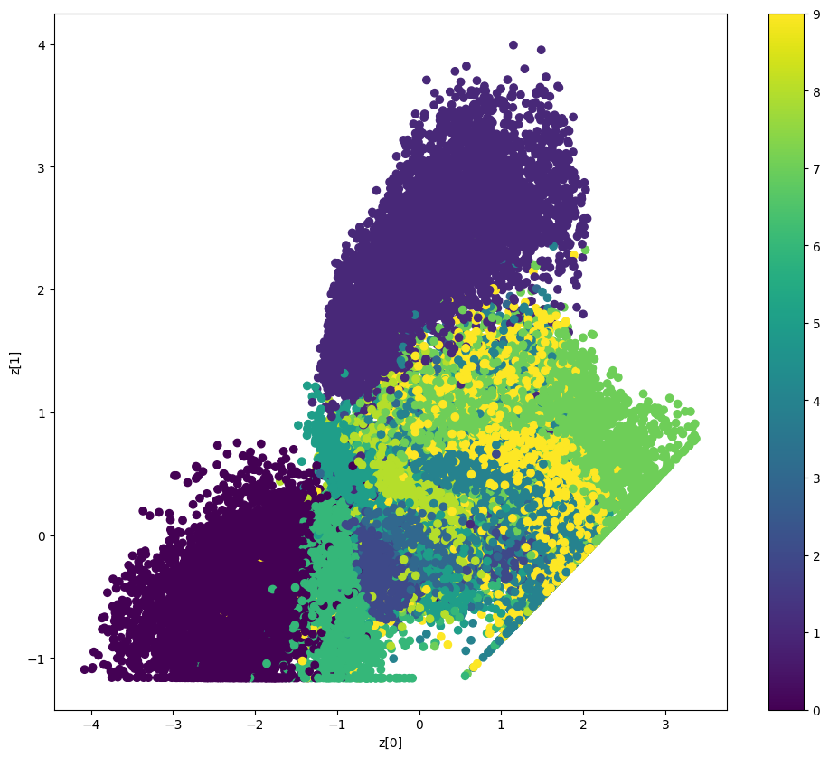

None
Variational AutoEncoder
Author: fchollet
Date created: 2020/05/03
Last modified: 2024/04/24
Description: Convolutional Variational AutoEncoder (VAE) trained on MNIST digits.

Setup
import os
os.environ["KERAS_BACKEND"] = "tensorflow"
import numpy as np
import tensorflow as tf
import keras
from keras import ops
from keras import layers
Create a sampling layer
class Sampling(layers.Layer):
"""Uses (z_mean, z_log_var) to sample z, the vector encoding a digit."""
def __init__(self, **kwargs):
super().__init__(**kwargs)
self.seed_generator = keras.random.SeedGenerator(1337)
def call(self, inputs):
z_mean, z_log_var = inputs
batch = ops.shape(z_mean)[0]
dim = ops.shape(z_mean)[1]
epsilon = keras.random.normal(shape=(batch, dim), seed=self.seed_generator)
return z_mean + ops.exp(0.5 * z_log_var) * epsilon
Build the encoder
latent_dim = 2
encoder_inputs = keras.Input(shape=(28, 28, 1))
x = layers.Conv2D(32, 3, activation="relu", strides=2, padding="same")(encoder_inputs)
x = layers.Conv2D(64, 3, activation="relu", strides=2, padding="same")(x)
x = layers.Flatten()(x)
x = layers.Dense(16, activation="relu")(x)
z_mean = layers.Dense(latent_dim, name="z_mean")(x)
z_log_var = layers.Dense(latent_dim, name="z_log_var")(x)
z = Sampling()([z_mean, z_log_var])
encoder = keras.Model(encoder_inputs, [z_mean, z_log_var, z], name="encoder")
encoder.summary()
Model: "encoder"
┏━━━━━━━━━━━━━━━━━━━━━┳━━━━━━━━━━━━━━━━━━━┳━━━━━━━━━┳━━━━━━━━━━━━━━━━━━━━━━┓ ┃ Layer (type) ┃ Output Shape ┃ Param # ┃ Connected to ┃ ┡━━━━━━━━━━━━━━━━━━━━━╇━━━━━━━━━━━━━━━━━━━╇━━━━━━━━━╇━━━━━━━━━━━━━━━━━━━━━━┩ │ input_layer │ (None, 28, 28, 1) │ 0 │ - │ │ (InputLayer) │ │ │ │ ├─────────────────────┼───────────────────┼─────────┼──────────────────────┤ │ conv2d (Conv2D) │ (None, 14, 14, │ 320 │ input_layer[0][0] │ │ │ 32) │ │ │ ├─────────────────────┼───────────────────┼─────────┼──────────────────────┤ │ conv2d_1 (Conv2D) │ (None, 7, 7, 64) │ 18,496 │ conv2d[0][0] │ ├─────────────────────┼───────────────────┼─────────┼──────────────────────┤ │ flatten (Flatten) │ (None, 3136) │ 0 │ conv2d_1[0][0] │ ├─────────────────────┼───────────────────┼─────────┼──────────────────────┤ │ dense (Dense) │ (None, 16) │ 50,192 │ flatten[0][0] │ ├─────────────────────┼───────────────────┼─────────┼──────────────────────┤ │ z_mean (Dense) │ (None, 2) │ 34 │ dense[0][0] │ ├─────────────────────┼───────────────────┼─────────┼──────────────────────┤ │ z_log_var (Dense) │ (None, 2) │ 34 │ dense[0][0] │ ├─────────────────────┼───────────────────┼─────────┼──────────────────────┤ │ sampling (Sampling) │ (None, 2) │ 0 │ z_mean[0][0], │ │ │ │ │ z_log_var[0][0] │ └─────────────────────┴───────────────────┴─────────┴──────────────────────┘
Total params: 69,076 (269.83 KB)
Trainable params: 69,076 (269.83 KB)
Non-trainable params: 0 (0.00 B)
Build the decoder
latent_inputs = keras.Input(shape=(latent_dim,))
x = layers.Dense(7 * 7 * 64, activation="relu")(latent_inputs)
x = layers.Reshape((7, 7, 64))(x)
x = layers.Conv2DTranspose(64, 3, activation="relu", strides=2, padding="same")(x)
x = layers.Conv2DTranspose(32, 3, activation="relu", strides=2, padding="same")(x)
decoder_outputs = layers.Conv2DTranspose(1, 3, activation="sigmoid", padding="same")(x)
decoder = keras.Model(latent_inputs, decoder_outputs, name="decoder")
decoder.summary()
Model: "decoder"
┏━━━━━━━━━━━━━━━━━━━━━━━━━━━━━━━━━┳━━━━━━━━━━━━━━━━━━━━━━━━━━━┳━━━━━━━━━━━━┓ ┃ Layer (type) ┃ Output Shape ┃ Param # ┃ ┡━━━━━━━━━━━━━━━━━━━━━━━━━━━━━━━━━╇━━━━━━━━━━━━━━━━━━━━━━━━━━━╇━━━━━━━━━━━━┩ │ input_layer_1 (InputLayer) │ (None, 2) │ 0 │ ├─────────────────────────────────┼───────────────────────────┼────────────┤ │ dense_1 (Dense) │ (None, 3136) │ 9,408 │ ├─────────────────────────────────┼───────────────────────────┼────────────┤ │ reshape (Reshape) │ (None, 7, 7, 64) │ 0 │ ├─────────────────────────────────┼───────────────────────────┼────────────┤ │ conv2d_transpose │ (None, 14, 14, 64) │ 36,928 │ │ (Conv2DTranspose) │ │ │ ├─────────────────────────────────┼───────────────────────────┼────────────┤ │ conv2d_transpose_1 │ (None, 28, 28, 32) │ 18,464 │ │ (Conv2DTranspose) │ │ │ ├─────────────────────────────────┼───────────────────────────┼────────────┤ │ conv2d_transpose_2 │ (None, 28, 28, 1) │ 289 │ │ (Conv2DTranspose) │ │ │ └─────────────────────────────────┴───────────────────────────┴────────────┘
Total params: 65,089 (254.25 KB)
Trainable params: 65,089 (254.25 KB)
Non-trainable params: 0 (0.00 B)
Define the VAE as a Model with a custom train_step
class VAE(keras.Model):
def __init__(self, encoder, decoder, **kwargs):
super().__init__(**kwargs)
self.encoder = encoder
self.decoder = decoder
self.total_loss_tracker = keras.metrics.Mean(name="total_loss")
self.reconstruction_loss_tracker = keras.metrics.Mean(
name="reconstruction_loss"
)
self.kl_loss_tracker = keras.metrics.Mean(name="kl_loss")
@property
def metrics(self):
return [
self.total_loss_tracker,
self.reconstruction_loss_tracker,
self.kl_loss_tracker,
]
def train_step(self, data):
with tf.GradientTape() as tape:
z_mean, z_log_var, z = self.encoder(data)
reconstruction = self.decoder(z)
reconstruction_loss = ops.mean(
ops.sum(
keras.losses.binary_crossentropy(data, reconstruction),
axis=(1, 2),
)
)
kl_loss = -0.5 * (1 + z_log_var - ops.square(z_mean) - ops.exp(z_log_var))
kl_loss = ops.mean(ops.sum(kl_loss, axis=1))
total_loss = reconstruction_loss + kl_loss
grads = tape.gradient(total_loss, self.trainable_weights)
self.optimizer.apply_gradients(zip(grads, self.trainable_weights))
self.total_loss_tracker.update_state(total_loss)
self.reconstruction_loss_tracker.update_state(reconstruction_loss)
self.kl_loss_tracker.update_state(kl_loss)
return {
"loss": self.total_loss_tracker.result(),
"reconstruction_loss": self.reconstruction_loss_tracker.result(),
"kl_loss": self.kl_loss_tracker.result(),
}
Train the VAE
(x_train, _), (x_test, _) = keras.datasets.mnist.load_data()
mnist_digits = np.concatenate([x_train, x_test], axis=0)
mnist_digits = np.expand_dims(mnist_digits, -1).astype("float32") / 255
vae = VAE(encoder, decoder)
vae.compile(optimizer=keras.optimizers.Adam())
vae.fit(mnist_digits, epochs=30, batch_size=128)
Epoch 1/30
41/547 ━[37m━━━━━━━━━━━━━━━━━━━ 1s 4ms/step - kl_loss: 1.0488 - loss: 474.8513 - reconstruction_loss: 473.8025
WARNING: All log messages before absl::InitializeLog() is called are written to STDERR
I0000 00:00:1700704358.696643 3339857 device_compiler.h:186] Compiled cluster using XLA! This line is logged at most once for the lifetime of the process.
W0000 00:00:1700704358.714145 3339857 graph_launch.cc:671] Fallback to op-by-op mode because memset node breaks graph update
W0000 00:00:1700704358.716080 3339857 graph_launch.cc:671] Fallback to op-by-op mode because memset node breaks graph update
547/547 ━━━━━━━━━━━━━━━━━━━━ 0s 9ms/step - kl_loss: 2.9140 - loss: 262.3454 - reconstruction_loss: 259.4314
W0000 00:00:1700704363.390106 3339858 graph_launch.cc:671] Fallback to op-by-op mode because memset node breaks graph update
W0000 00:00:1700704363.392582 3339858 graph_launch.cc:671] Fallback to op-by-op mode because memset node breaks graph update
547/547 ━━━━━━━━━━━━━━━━━━━━ 11s 9ms/step - kl_loss: 2.9145 - loss: 262.3454 - reconstruction_loss: 259.3424 - total_loss: 213.8374
Epoch 2/30
547/547 ━━━━━━━━━━━━━━━━━━━━ 2s 4ms/step - kl_loss: 5.2591 - loss: 177.2659 - reconstruction_loss: 171.9981 - total_loss: 172.5344
Epoch 3/30
547/547 ━━━━━━━━━━━━━━━━━━━━ 2s 4ms/step - kl_loss: 6.0199 - loss: 166.4822 - reconstruction_loss: 160.4603 - total_loss: 165.3463
Epoch 4/30
547/547 ━━━━━━━━━━━━━━━━━━━━ 2s 3ms/step - kl_loss: 6.1585 - loss: 163.0588 - reconstruction_loss: 156.8987 - total_loss: 162.2310
Epoch 5/30
547/547 ━━━━━━━━━━━━━━━━━━━━ 2s 4ms/step - kl_loss: 6.2646 - loss: 160.6541 - reconstruction_loss: 154.3888 - total_loss: 160.2672
Epoch 6/30
547/547 ━━━━━━━━━━━━━━━━━━━━ 2s 4ms/step - kl_loss: 6.3202 - loss: 159.1411 - reconstruction_loss: 152.8203 - total_loss: 158.8850
Epoch 7/30
547/547 ━━━━━━━━━━━━━━━━━━━━ 2s 4ms/step - kl_loss: 6.3759 - loss: 157.8918 - reconstruction_loss: 151.5157 - total_loss: 157.8260
Epoch 8/30
547/547 ━━━━━━━━━━━━━━━━━━━━ 2s 4ms/step - kl_loss: 6.3899 - loss: 157.2225 - reconstruction_loss: 150.8320 - total_loss: 156.8395
Epoch 9/30
547/547 ━━━━━━━━━━━━━━━━━━━━ 2s 4ms/step - kl_loss: 6.4204 - loss: 156.0726 - reconstruction_loss: 149.6520 - total_loss: 156.0463
Epoch 10/30
547/547 ━━━━━━━━━━━━━━━━━━━━ 2s 4ms/step - kl_loss: 6.4176 - loss: 155.6229 - reconstruction_loss: 149.2051 - total_loss: 155.4912
Epoch 11/30
547/547 ━━━━━━━━━━━━━━━━━━━━ 3s 4ms/step - kl_loss: 6.4297 - loss: 155.0198 - reconstruction_loss: 148.5899 - total_loss: 154.9487
Epoch 12/30
547/547 ━━━━━━━━━━━━━━━━━━━━ 2s 4ms/step - kl_loss: 6.4338 - loss: 154.1115 - reconstruction_loss: 147.6781 - total_loss: 154.3575
Epoch 13/30
547/547 ━━━━━━━━━━━━━━━━━━━━ 2s 4ms/step - kl_loss: 6.4356 - loss: 153.9087 - reconstruction_loss: 147.4730 - total_loss: 153.8745
Epoch 14/30
547/547 ━━━━━━━━━━━━━━━━━━━━ 2s 4ms/step - kl_loss: 6.4506 - loss: 153.7804 - reconstruction_loss: 147.3295 - total_loss: 153.6391
Epoch 15/30
547/547 ━━━━━━━━━━━━━━━━━━━━ 2s 4ms/step - kl_loss: 6.4399 - loss: 152.7727 - reconstruction_loss: 146.3336 - total_loss: 153.2117
Epoch 16/30
547/547 ━━━━━━━━━━━━━━━━━━━━ 2s 4ms/step - kl_loss: 6.4661 - loss: 152.7382 - reconstruction_loss: 146.2725 - total_loss: 152.9310
Epoch 17/30
547/547 ━━━━━━━━━━━━━━━━━━━━ 2s 4ms/step - kl_loss: 6.4566 - loss: 152.3313 - reconstruction_loss: 145.8751 - total_loss: 152.5897
Epoch 18/30
547/547 ━━━━━━━━━━━━━━━━━━━━ 2s 4ms/step - kl_loss: 6.4613 - loss: 152.4331 - reconstruction_loss: 145.9715 - total_loss: 152.2775
Epoch 19/30
547/547 ━━━━━━━━━━━━━━━━━━━━ 2s 4ms/step - kl_loss: 6.4551 - loss: 151.9406 - reconstruction_loss: 145.4857 - total_loss: 152.0997
Epoch 20/30
547/547 ━━━━━━━━━━━━━━━━━━━━ 2s 4ms/step - kl_loss: 6.4332 - loss: 152.1597 - reconstruction_loss: 145.7260 - total_loss: 151.8623
Epoch 21/30
547/547 ━━━━━━━━━━━━━━━━━━━━ 2s 4ms/step - kl_loss: 6.4644 - loss: 151.4290 - reconstruction_loss: 144.9649 - total_loss: 151.6146
Epoch 22/30
547/547 ━━━━━━━━━━━━━━━━━━━━ 2s 4ms/step - kl_loss: 6.4662 - loss: 151.1586 - reconstruction_loss: 144.6929 - total_loss: 151.4525
Epoch 23/30
547/547 ━━━━━━━━━━━━━━━━━━━━ 2s 4ms/step - kl_loss: 6.4532 - loss: 150.9665 - reconstruction_loss: 144.5139 - total_loss: 151.2734
Epoch 24/30
547/547 ━━━━━━━━━━━━━━━━━━━━ 2s 4ms/step - kl_loss: 6.4520 - loss: 151.2177 - reconstruction_loss: 144.7655 - total_loss: 151.1416
Epoch 25/30
547/547 ━━━━━━━━━━━━━━━━━━━━ 2s 4ms/step - kl_loss: 6.4537 - loss: 150.8981 - reconstruction_loss: 144.4445 - total_loss: 151.0104
Epoch 26/30
547/547 ━━━━━━━━━━━━━━━━━━━━ 2s 4ms/step - kl_loss: 6.4669 - loss: 150.5807 - reconstruction_loss: 144.1143 - total_loss: 150.8807
Epoch 27/30
547/547 ━━━━━━━━━━━━━━━━━━━━ 2s 4ms/step - kl_loss: 6.4575 - loss: 150.3731 - reconstruction_loss: 143.9162 - total_loss: 150.7236
Epoch 28/30
547/547 ━━━━━━━━━━━━━━━━━━━━ 2s 4ms/step - kl_loss: 6.4644 - loss: 150.7117 - reconstruction_loss: 144.2471 - total_loss: 150.6108
Epoch 29/30
547/547 ━━━━━━━━━━━━━━━━━━━━ 2s 4ms/step - kl_loss: 6.4902 - loss: 150.1759 - reconstruction_loss: 143.6862 - total_loss: 150.4756
Epoch 30/30
547/547 ━━━━━━━━━━━━━━━━━━━━ 2s 4ms/step - kl_loss: 6.4585 - loss: 150.6554 - reconstruction_loss: 144.1964 - total_loss: 150.3988
<keras.src.callbacks.history.History at 0x7fbe44614eb0>
Display a grid of sampled digits
import matplotlib.pyplot as plt
def plot_latent_space(vae, n=30, figsize=15):
# display a n*n 2D manifold of digits
digit_size = 28
scale = 1.0
figure = np.zeros((digit_size * n, digit_size * n))
# linearly spaced coordinates corresponding to the 2D plot
# of digit classes in the latent space
grid_x = np.linspace(-scale, scale, n)
grid_y = np.linspace(-scale, scale, n)[::-1]
for i, yi in enumerate(grid_y):
for j, xi in enumerate(grid_x):
z_sample = np.array([[xi, yi]])
x_decoded = vae.decoder.predict(z_sample, verbose=0)
digit = x_decoded[0].reshape(digit_size, digit_size)
figure[
i * digit_size : (i + 1) * digit_size,
j * digit_size : (j + 1) * digit_size,
] = digit
plt.figure(figsize=(figsize, figsize))
start_range = digit_size // 2
end_range = n * digit_size + start_range
pixel_range = np.arange(start_range, end_range, digit_size)
sample_range_x = np.round(grid_x, 1)
sample_range_y = np.round(grid_y, 1)
plt.xticks(pixel_range, sample_range_x)
plt.yticks(pixel_range, sample_range_y)
plt.xlabel("z[0]")
plt.ylabel("z[1]")
plt.imshow(figure, cmap="Greys_r")
plt.show()
plot_latent_space(vae)

Display how the latent space clusters different digit classes
def plot_label_clusters(vae, data, labels):
# display a 2D plot of the digit classes in the latent space
z_mean, _, _ = vae.encoder.predict(data, verbose=0)
plt.figure(figsize=(12, 10))
plt.scatter(z_mean[:, 0], z_mean[:, 1], c=labels)
plt.colorbar()
plt.xlabel("z[0]")
plt.ylabel("z[1]")
plt.show()
(x_train, y_train), _ = keras.datasets.mnist.load_data()
x_train = np.expand_dims(x_train, -1).astype("float32") / 255
plot_label_clusters(vae, x_train, y_train)
W0000 00:00:1700704481.358429 3339856 graph_launch.cc:671] Fallback to op-by-op mode because memset node breaks graph update
